User manual, version 1 · November 2026 · for Lancelot 0.1, a pre-release
Lancelot
A desktop app for settling volunteer-run events: receipts, advances, reimbursements, tickets and drinks, in one file per event.
About Lancelot
Why it exists
Someone in a volunteer group ends up holding the money for the summer party. People pay for groceries with their own cards. Tickets arrive at one account, donations land in a cash box, and one person sold a few tickets and was paid privately. Afterwards, a shared spreadsheet has to answer three questions: what did we make, who is owed what, and can we prove it?
Spreadsheets can do this, but they let a wrong formula or a forgotten line go unnoticed. Lancelot exists so that the treasurer can:
- Plan the event with estimated costs, and see where it is heading.
- Record every real movement of money, with the receipt attached.
- Settle the event: the result, who is owed what, and proof that every cent is accounted for.
- Reimburse everyone who advanced money, correctly and without forgetting anyone.
You fill in simple forms: who paid, for what, how much. Underneath, every entry moves money from one place to another, so money can't appear or vanish, and each balance is worked out from the entries instead of being typed in. Amounts are kept in whole cents, so nothing is lost to rounding.
Who it is for
- The one treasurer of a volunteer-run event, such as a festival, party, conference or camp, who works on one computer.
- Groups where volunteers advance money and have to be paid back, or hold money that has to come back to the event.
- Events of roughly this size: up to about 100 entries and 100 receipts, which is what the app was designed around. Larger events may work, but haven't been tried.
- People comfortable with computers, not necessarily with bookkeeping. You never see debit or credit.
Tickets, budgets, cost centres and drinks are all optional. An event can be just a few receipts and a payout list.
Who it is not for
- Anyone who needs formal accounting. Lancelot doesn't do tax returns or legally compliant bookkeeping such as GoBD. Its report is proof for your group, not for the tax office.
- Teams who want to work together in the app. One event file is open in one place at a time, with no accounts or sharing.
- Organisations tracking money across years. Each event stands alone. Carried-over profit, overheads and multi-year reports stay outside the app.
- Events in a currency it doesn't support. An event can be in euros, US dollars, pounds or Swiss francs, in one currency only, with no conversion.
- Anyone who needs a finished, supported product today. See the status note below.
The sums are heavily tested, but the first real event is still to come. For your first event, keep your spreadsheet running alongside it and check that both reach the same final balance to the cent. Expect rough edges, and keep your original receipts.
What it can do today
| Area | What you get |
|---|---|
| Event file | One .lancelot file per event, receipts included. Automatic backups and an integrity check on every open and save. Start from an earlier event as a template. |
| Entries | Expense, income, transfer and settle forms. Split one receipt over several categories. Add up sums inside an amount field. Every change is kept in a searchable history. |
| Receipts | Any number of files per entry, stored in the event file. Preview them, find expenses with none, and drop a file on the window to start an expense. |
| People | One balance per person, netting what they advanced against what they hold. Reimbursement by bank transfer, with an IBAN check, or any other way. Payout list as PDF or CSV, repayment list, and marking paid who you choose in one go. |
| Budget | Plan against actual per line, category and cost centre, with a cautious forecast of the result. |
| Tickets | Tiers with price, fee and quota. Import .ods, .xlsx or .csv sheets with a review of what changed. Conflicts when tickets disappear, refunds, manual sales, a sales chart and break-even. |
| Stock and sales | For drinks or other goods, on commission or bought outright: billed units, the gap against what people logged, expected against collected money, and an invoice check. |
| Settling | Cash counts and bank statement checks, a list of open items, a settlement report with receipts, a CSV of all transactions, and closing the event. |
| Your computer | Works fully offline. Light and dark appearance, two number formats and keyboard shortcuts for entering a stack of receipts. |
What it cannot do
Not yet
- Be downloaded. There are no installers or signed releases, so you have to build it yourself.
- Send payments or export a bank file. SEPA XML export is planned. For now you hand over the payout list or type the transfers yourself.
- Import drink sales from a file. Counts are typed in, or pulled from a data source.
- Be relied on for data sources. Pulling tickets and drink counts works in the desktop app against a test service, but hasn't been tried with a real provider.
- Produce a typeset report. The report is printed to PDF through the system's print dialog.
- Use real sale dates for tickets. The sales chart is built from the dates of your imports.
- Hold a receipt without an entry. Each receipt belongs to an entry, so a pile of unbooked receipts stays outside the app.
- Undo. History shows every change with its before and after, but you correct mistakes by hand.
Not planned
- Several users at once, or anything spanning several events.
- Legal or tax bookkeeping compliance.
- Reading receipts automatically. It was tried, and typing the number was faster and more accurate.
The app's screens are in English only. More currencies and third-party plugins are ideas for later, not commitments.
Getting started
Install it
Lancelot is built for macOS first. It also builds for Windows and Linux, but those get less use. Until there are downloads, building it takes a little setup at the command line, and access to the source code, which is currently private.
- Install Rust (1.90 or newer), Node 24 and pnpm 12. On a Mac, also run
xcode-select --install. - Get the source code and open a terminal in its folder.
- Build the app:
cd app pnpm install pnpm tauri build --bundles app - Move
target/release/bundle/macos/Lancelot.appto your Applications folder, and open it.
Create a throwaway event and enter a few invented receipts before you trust it with a real one. Nothing leaves your computer, and you can delete the file afterwards.
Six ideas to know
| Idea | What it means | Example |
|---|---|---|
| Event | One self-contained world in one file. It knows nothing about events before or after it. | Summer Festival 2026 |
| Account | A real place where the event's money sits: bank or cash. | Bank account, Cash box |
| Person | Someone who advanced money or holds event money. Both net into one balance. | Bob advanced 120 € and holds 300 €, so Bob owes 180 €. |
| Category | What kind of income or expense a line is. | Kitchen, Venue, Tickets |
| Budget line | A planned amount. Planning never changes a real balance. | Hall rent, 1.800 € |
| Cost centre | An optional part of the event with its own result. | Drinks |
Money in someone's private account or pocket is not an account. It is that person holding event money, and it shows in their balance.
One rule explains the balances: the result is income minus expenses, and it always equals what's in your accounts, plus what people hold, minus what people are owed, minus any opening counts. The Overview shows that sum line by line.
Find your way around

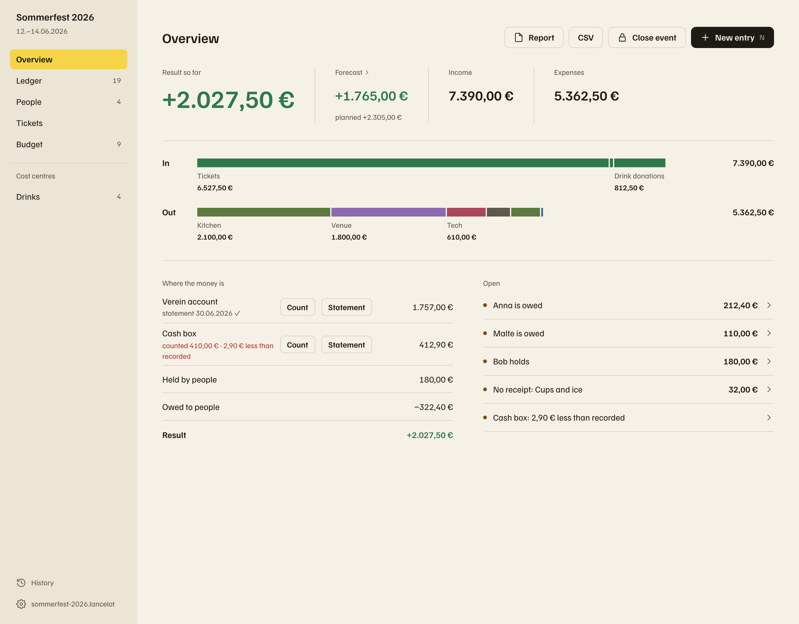
- The sidebar lists the pages: Overview, Ledger, People, Tickets and Budget, then one page per cost centre.
- At the bottom of the sidebar are History and the file name, which opens Settings.
- Editing happens in a panel on the right. Esc closes it. If that would discard changes, it warns you first, and a second Esc goes through.
- Frames marked Plugin are optional extras you can switch off per event.
- Almost every figure leads somewhere. Open items go to their fix, and a person's lines go to the entries behind them.
Shortcuts are shown for a Mac. On Windows and Linux, use Ctrl instead of ⌘.
Running an event
The event at a glance
Here is the order that works for most events. Skip the chapters you don't need.
- Months beforeCreate the event, set it up, plan the budget and add people.
- Ticket salesImport each new ticket sheet and resolve any conflicts.
- Before doorsCount the cash you start with.
- DuringEnter receipts as they come, or collect them for later.
- AfterwardsEnter the rest, finish stock and sales, and count the cash and check the statement.
- SettlingPay people back, collect what's owed, then print the report and close.
1. Create the event

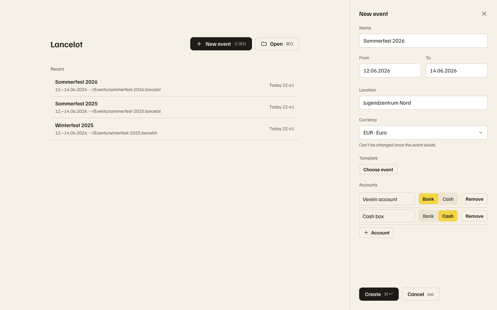
- Click New event (⇧⌘N).
- Enter the Name. Dates and location are optional, and you can change them later.
- Under Accounts, name each real place the money sits and choose Bank or Cash. You need at least one. Use + Account for more.
- Check the Currency. It can't be changed once the event exists. The list shows every currency, with the ones Lancelot can't handle yet greyed out under Unsupported.
- Click Create (⌘↵), then choose where to save the file.
Under Template, choose an earlier event. The new event copies its accounts, categories, cost centres, budget lines, people and ticket tiers, but no money. It also takes that event's currency, because its prices and budget are in it. The two files stay independent afterwards.

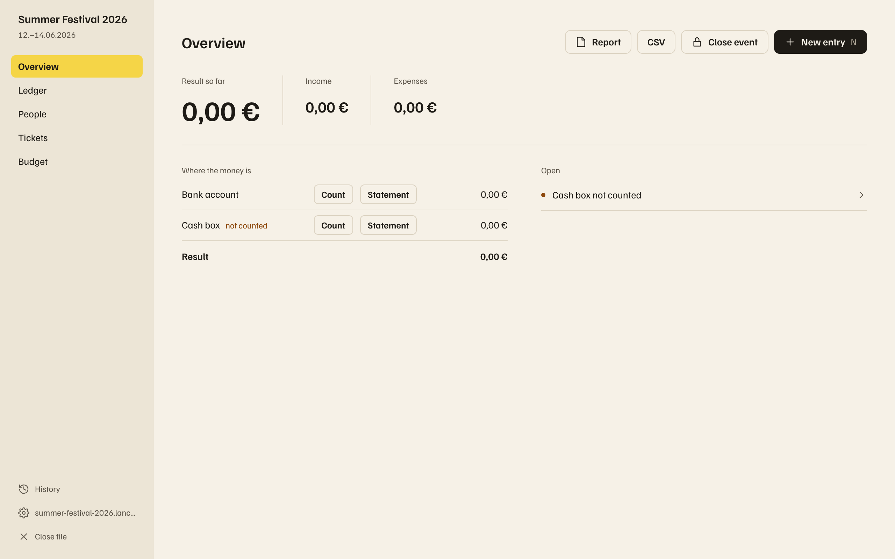
2. Set it up
Click the file name at the bottom of the sidebar, or press ⌘,, to open Settings. The defaults are fine for many events. Changes save as you make them.

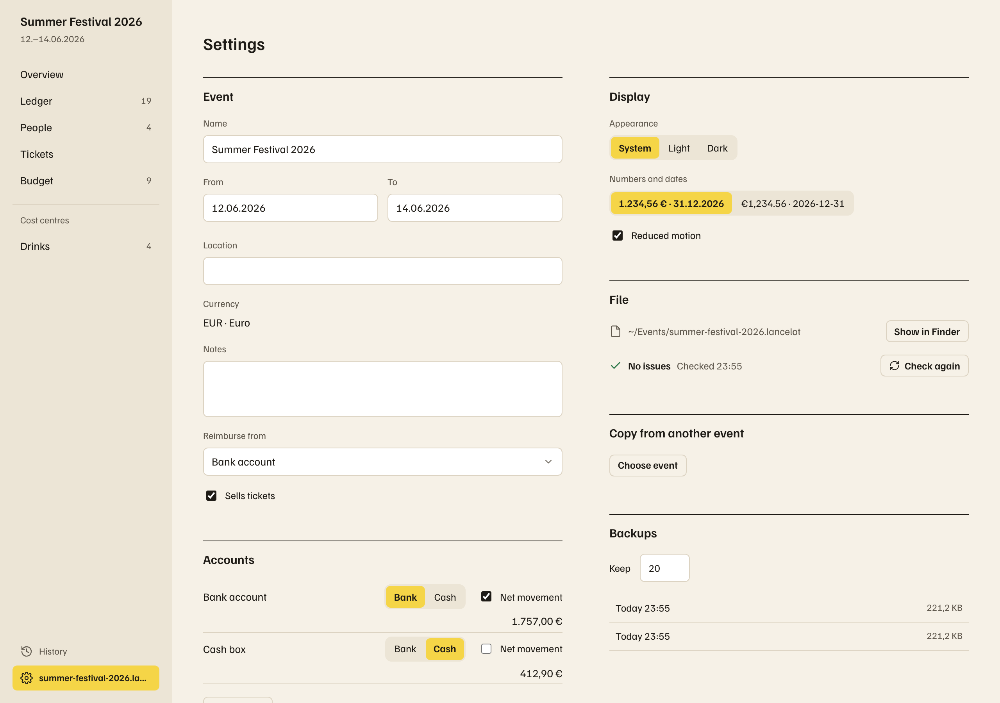
| Setting | When to change it |
|---|---|
| Reimburse from | The account that settles normally come from. It starts as the first bank account. |
| Sells tickets | Switch it off if the event has no tickets. This hides the Tickets page, and only works while the event has no tiers. |
| Net movement | On for an account whose real total doesn't matter, such as a shared bank account that holds other money too. Lancelot then only tracks what this event changed. Bank accounts start with it on. |
| Cost centres | Add one for each part of the event that needs its own result. A new event has none. |
| Categories | Set which cost centre a category's new lines start in. New categories are added from the entry and budget forms. |
| Plugins | Switch off what you don't use. Their data stays in the file. |
| Copy from another event | Bring people and budget lines into this event. It never overwrites, and the other file is only read. A budget can only come from an event in the same currency. |
The default categories are Tickets and General for income, and Kitchen, Mobility, Venue, Tech and General for expenses.

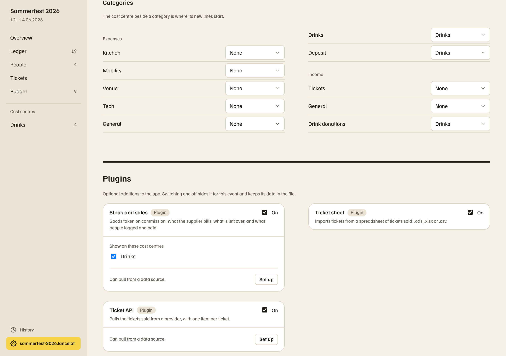
3. Plan the budget
A budget is optional, and it never changes a real balance. It gives you a forecast and shows where you're drifting from the plan.

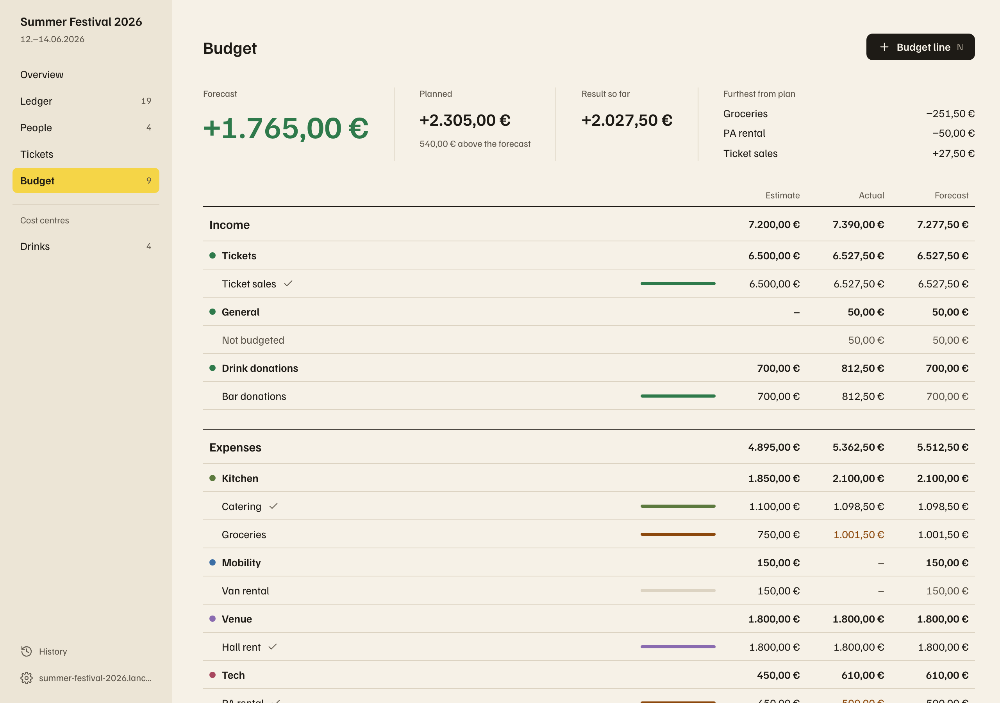
- On Budget, click Budget line or press N.
- Choose a Category and, if you use them, a Cost centre.
- Enter a Description and an Estimate, either as an amount or as quantity × unit price.
- Click Save (⌘↵).
- Later, tick Complete when no more money will come in or go out on that line.

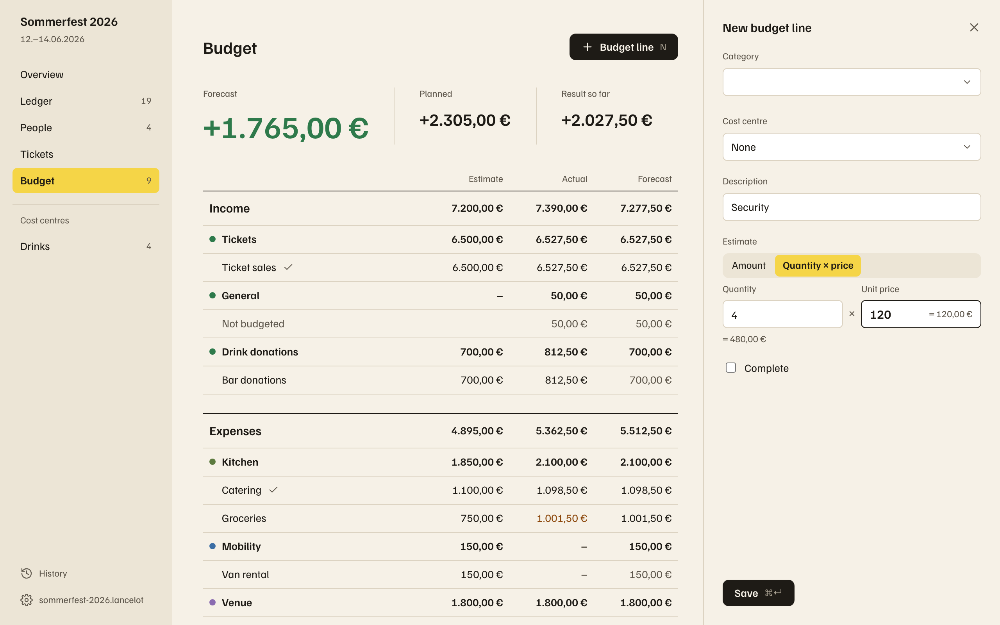
How the forecast works
It's deliberately cautious, so it may look worse than you expect:
- A line marked Complete counts with its actual amount.
- An open expense line counts with the larger of estimate and actual.
- An open income line counts with the smaller of estimate and actual.
- Anything not budgeted is added on top.
4. Add people
Add anyone who will advance or hold money. You can also add someone on the spot from any entry form, by choosing New person….
- On People, click + Person and enter a name.
- Open the person and click Edit.
- Under Reimburse by, choose how they get their money back:
- Bank transfer: add the IBAN, which is checked as you type, and if it differs from their name, the Account holder. The BIC is optional.
- Other: say how under Method, such as a PayPal address or “Cash”. Any bank details stay in the file, and come back if you switch.
- Contact and notes are optional.
- Click Done.

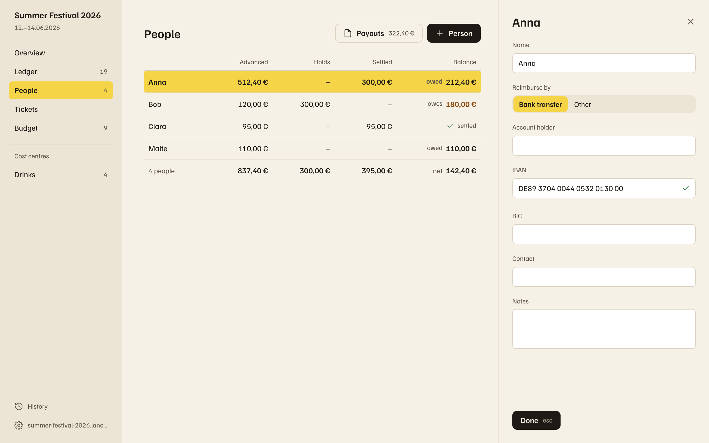
Someone with no method can't be included in Mark as paid, and the People page flags anyone who is owed money and has none. You can still record a payment to them by hand with Settle.
5. Count the cash
A cash box exists before the event and after it. Lancelot only sees what's in it at the start and the end. So before anything happens, count it:
- On the Overview, under Where the money is, click Count next to the cash account.
- Under Opening count, enter the date and the amount.
- Click Save and leave the closing count empty for now.

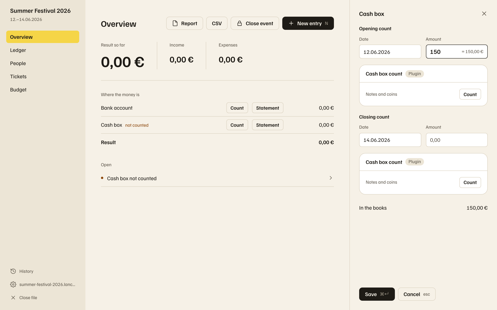
A bank account with Net movement on has no opening count. Lancelot starts it from zero and follows only this event's money.
6. Enter the money
Press N or click New entry. There are four forms, and choosing the right one is most of the work:
| Form | Use it when | Example |
|---|---|---|
| Expense | Event money was spent. Paid by is an account, or a person who advanced it. | Anna buys food on a private card: Paid by Anna, Kitchen. |
| Income | The event earned money. Received by is an account, or a person who now holds it. | A donation goes in the cash box: Received by Cash box, General. |
| Transfer | Money moved, but wasn't earned or spent. | Anna puts 200 € of private money into the box: From Anna, To Cash box. Anna is now owed 200 €. |
| Settle | A person's balance was paid, in either direction. | Reimburse Anna from the Bank account, or Bob repays the money held. |
Enter an expense

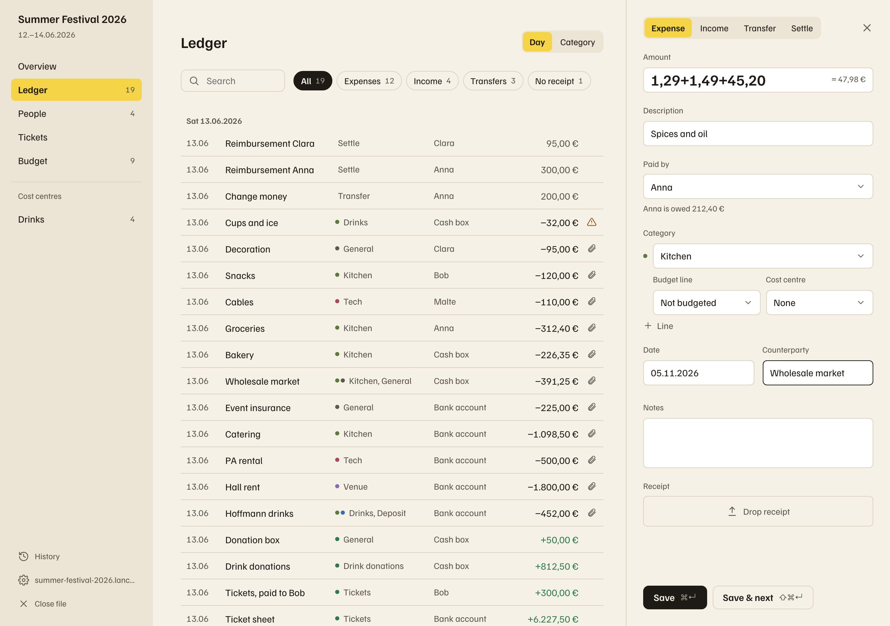
- Press N. Expense is already selected.
- Type the Amount. Sums such as
1,29+1,49work too. - Choose Paid by. If it's a person, the panel shows their balance.
- Choose the Category, or pick New category… at the end of the list.
- If it belongs to one, choose the Budget line. This also sets the line's category and cost centre.
- Check the Date, and add a Counterparty (the shop or supplier) and a Description. Names you've used before are suggested as you type.
- Add the receipt under Receipt: drop the file there, or click to choose one.
- Click Save (⌘↵), or Save & next (⇧⌘↵) to go straight on. The next form keeps the date and payer, which helps with a stack of receipts.
Split one receipt
When a receipt covers several categories, click + Line. Give each line its category and amount, until the counter above reads 0,00 € left. The lines have to add up exactly before you can save.

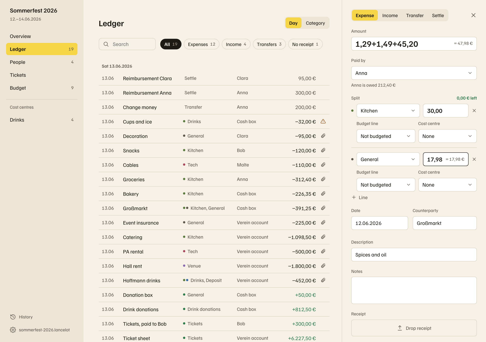
Add receipts
- Start from the file: drop a file on the window to start an expense with it attached.
- Add to an entry: drop a file on an open entry.
- Any format works: PNG, JPG, HEIC, PDF or anything else is stored as it is.
- Look at one: open the entry to preview a receipt, open it in another app, or export it.
Receipts are stored in the event file, so it grows with them.
Work with the ledger

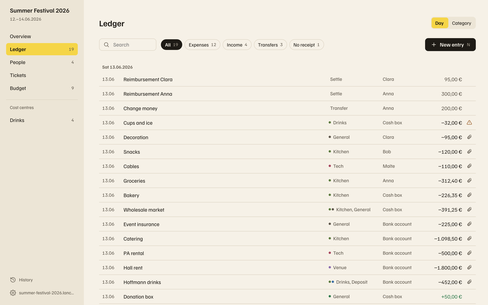
- Group by Day or Category, search, or filter by type.
- No receipt shows the expenses still missing one.
- Move with ↑ ↓ and open an entry with ↵.
- Open an entry to edit or delete it. Each change is written to History, with its before and after values.
Entries that come from tickets are locked, and are changed on the Tickets page.

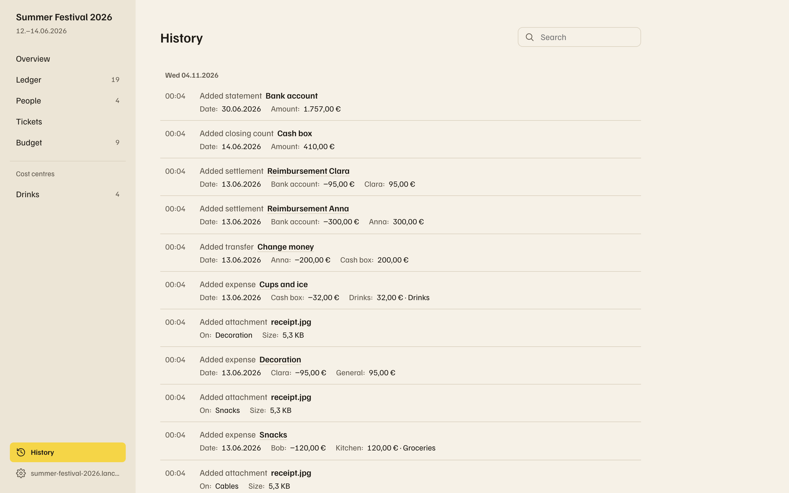
7. Bring in tickets
Skip this chapter if you don't sell tickets, or if typing them in as income is enough. Tickets typed into the Tickets category show on this page as their own line.
Create your tiers
- On Tickets, click + Tier.
- Enter the Name and Price. Fee is the platform's percentage, and Quota the number of places. Both are optional.
- Under Names in the sheet, add any other spelling your ticket sheet uses for this tier.
- Click Save.

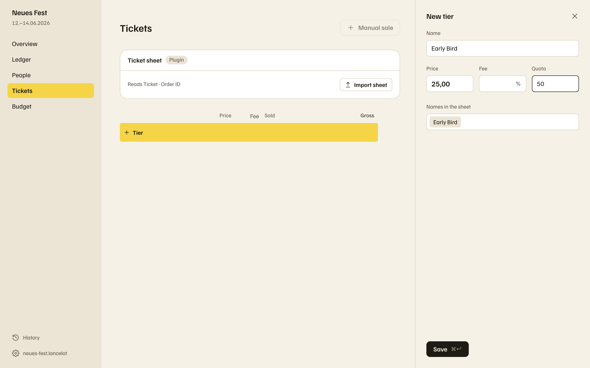
Import a ticket sheet
The sheet needs one row per ticket, with a column for the tier and, usually, one for the order ID. By default these are called Ticket and Order ID. Click Reads Ticket · Order ID to change the names. Lancelot reads only those columns, so names and email addresses in the file are never stored.
If your sheet has no order IDs, untick Rows have an order ID in the same panel before the first import. Lancelot then counts tickets per tier. You can only change this while the event has no imports, because every import has to be the same kind.
A tier with fewer tickets than before still becomes a conflict. But if one ticket is cancelled and another of the same tier is sold between two imports, the count stays the same and nothing shows. Import often, and record cancellations you know about with + Cancellation.
- Click Import sheet and choose an
.ods,.xlsxor.csvfile, or drop it on the page. - If rows can't be read, they're listed first. Fix the file, or continue with Review import.
- Choose where the money arrives under Money arrives in.
- Set the Snapshot date to the date the sheet was exported. These dates build your sales chart.
- Check the changes, then click Import.

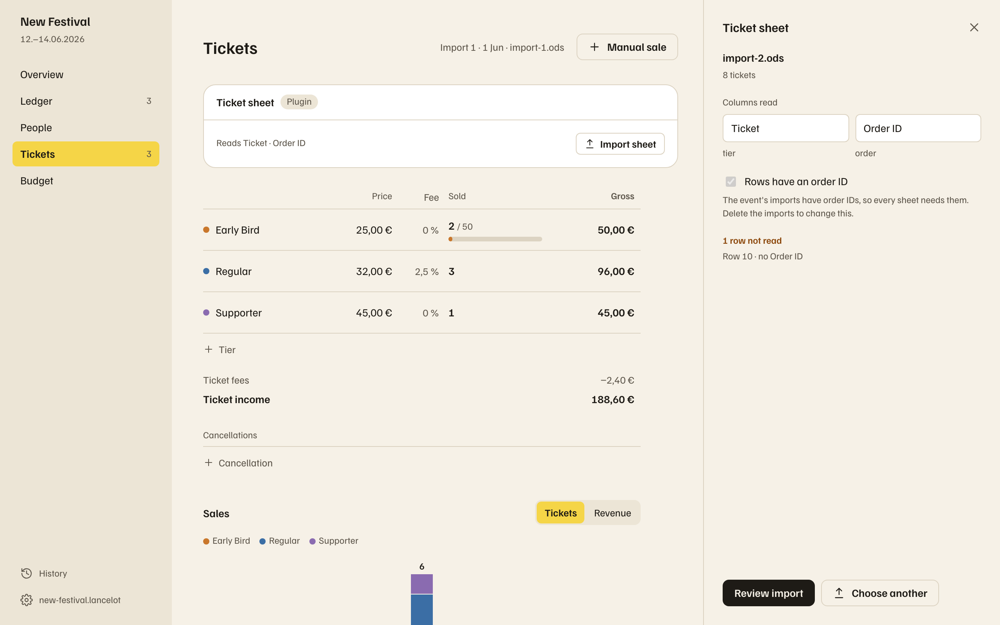
If a tier name in the sheet matches nothing, the import is blocked until you map it. Choose Alias of… if it's another name for an existing tier, or New tier if it isn't. Lancelot remembers the mapping.

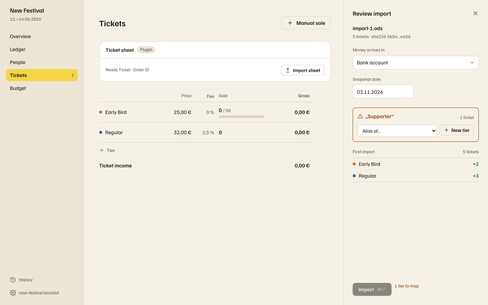
Import each new sheet as sales go on. Each one replaces the last, and the review shows what changed. The income is generated for you, per tier, with fees as their own line. If you import an older sheet, it only adds to the chart.
Resolve conflicts
When a ticket that was in the last sheet is gone from the new one, Lancelot won't guess why. It creates a conflict and shows a badge in the sidebar. Until it's resolved, that ticket counts as not sold.

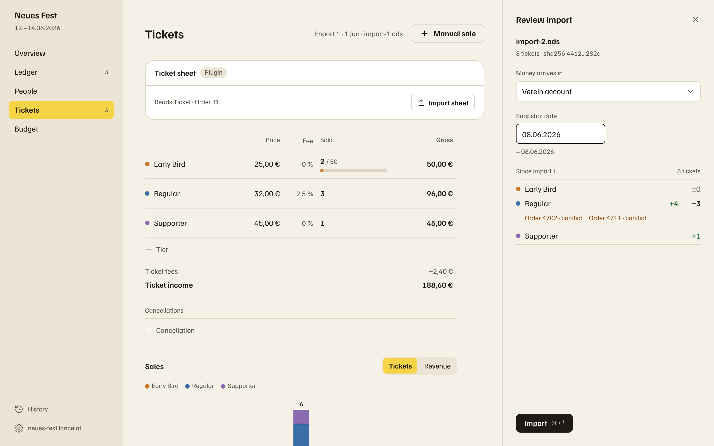

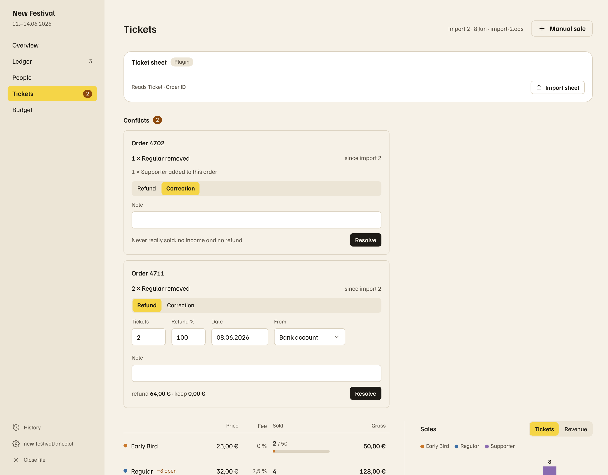
For each one, choose:
- Refund if the ticket was really cancelled. Enter the percentage refunded, from 0 to 100, the date and who paid. The event keeps the rest. Platform fees aren't refunded.
- Correction if it was never really sold, such as a mistake in the sheet. There's no income and no refund.
- Confirm, offered when it matches a cancellation you already recorded by hand.
If an order has several tickets, the Tickets field lets you resolve only some of them, and a second time for the rest. An order that moved to another tier shows the removal and the addition together. That's usually a correction.

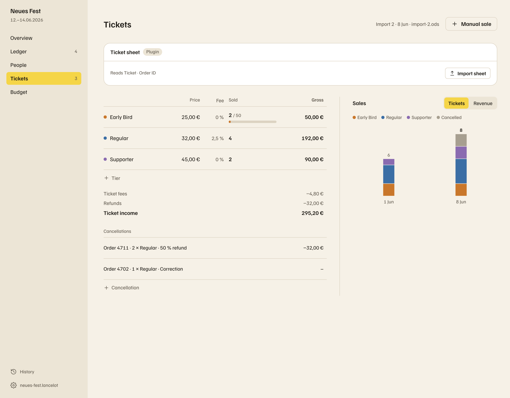
Manual sales and cancellations
- Manual sale is for tickets sold outside the regular channels. Enter the tier, the count, who received the money, the date and an optional reference. If a person received it, it shows up in their balance.
- + Cancellation records a cancellation without waiting for the sheet to change, on an order ID, a tier of the sheet when it has no order IDs, or a manual sale. If the order disappears later, the conflict offers to match it, so nothing counts twice.

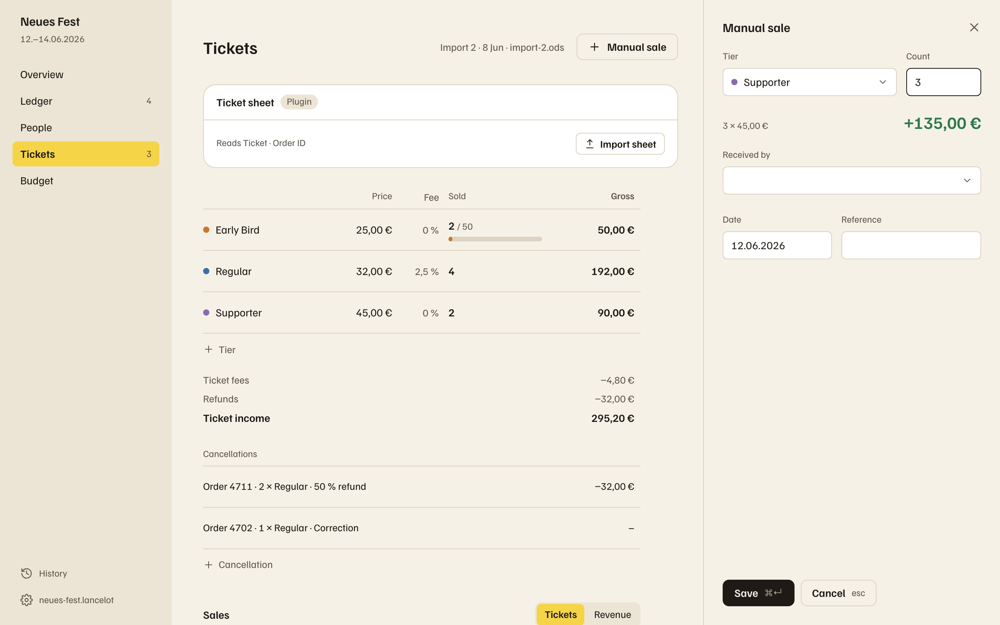
Once there's a budget, the page also shows Break-even: the amount still missing against the forecast, and about how many tickets would close it.
To change or delete an import, click the import line at the top of the page, such as Import 2 · 8 Jun. Deleting one previews what it will change first.
8. Track stock and sales
The Stock and sales plugin is for goods you get from a supplier and pass on, such as drinks, food or merch. Either you take them on commission, return what's unsold and pay for the rest, or you buy them outright. It's only for checking, and never creates entries. Real money still goes in through the normal forms, and an event settles the same without it.
Set it up
- In Settings → Plugins → Stock and sales, enter a name under New cost centre for goods, such as
Drinks, and click Add cost centre. This creates the cost centre with the categories Drinks income, Drinks and Deposit. To use a cost centre you already have, tick it under Show on these cost centres instead. - Open the cost centre in the sidebar, and click Supplier at the top of the section. Enter the Supplier, and if you have one, the category that holds a returnable deposit.
- Leave On commission ticked if you can return what's unsold. Untick it if you bought the goods outright: then there's no Returned count, and everything taken is billed.
- Click + Product and enter its Cost per unit, without deposit, and its Donation per unit.

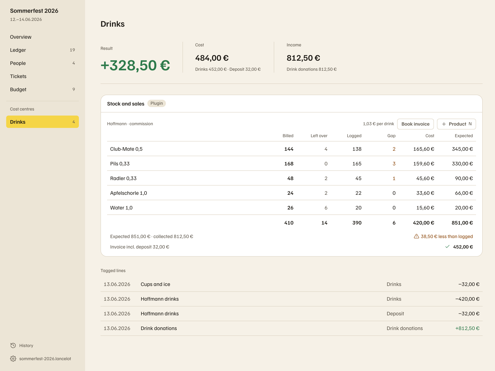
Several suppliers
A cost centre has one supplier, with its own products and invoice check. If your goods come from two independent suppliers, give each one its own cost centre.
- In Settings → Cost centres, add one per supplier, such as Drinks Hoffmann and Drinks Krüger.
- In Settings → Plugins → Stock and sales, tick both under Show on these cost centres.
- Open each one in the sidebar, click Supplier to enter its supplier, and add the products you get from them.
- Both can share a category such as Drinks. A category starts its lines in one cost centre, so check the Cost centre on each expense and income line, because that's how money reaches the right supplier's figures.

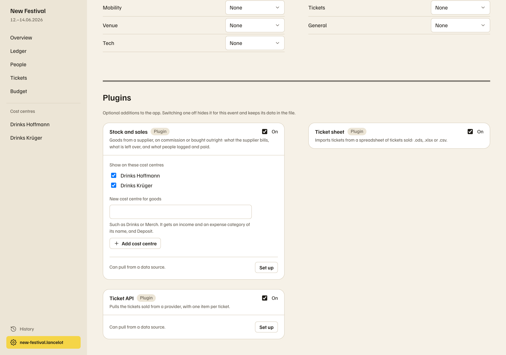
It looks for expenses on the cost centre whose Counterparty matches the supplier, ignoring capitals. Everywhere else the counterparty is only information, but here “Hoffman” won't count as “Hoffmann”. Book invoice fills in the name for you, and typing one offers the names already used.
After the event
- Open each product and fill in the counts:
- Taken: received from the supplier.
- Returned: given back unsold, and not billed. Only on commission.
- Left over: paid for, but still here.
- Logged: what people logged as taken.
- Enter the money you collected as normal Income, in the cost centre's income category, such as Drinks income.
- When the supplier's invoice arrives, click Book invoice. It opens an expense form filled in from your records, so compare the amount with the real invoice. Put any deposit on its own line in the deposit category, then save.

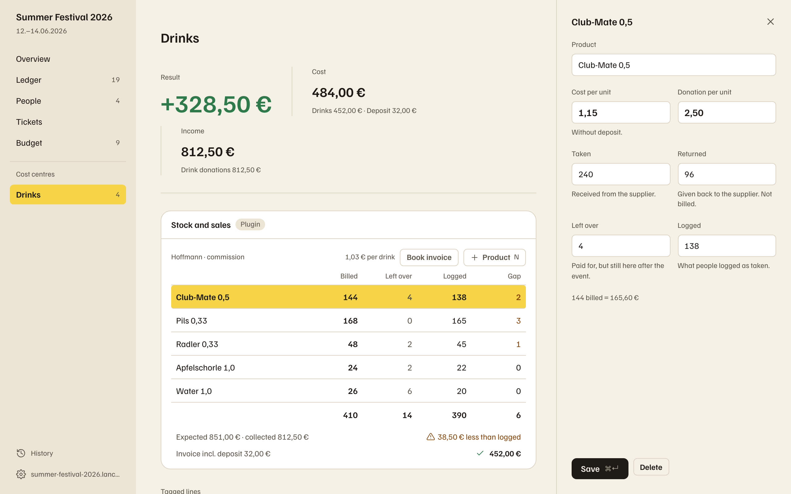
Read the table
| Column | Meaning |
|---|---|
| Billed | Taken minus returned. Bought outright, everything taken. |
| Gap | Billed, minus left over, minus logged. This can be what the crew used, or breakage, so it's no proof of anyone's dishonesty. |
| Cost | Billed × cost per unit. The total is what the invoice should say without deposit. |
| Expected | Logged × donation per unit, shown against what you collected. |
| Per unit | The cost of what's gone, per unit gone. Leftovers don't count. |
Create one product called Tally, with the value of a tally mark as its donation and only a logged count. Expected donations still work.
9. Check against reality
Count the cash at the end
- On the Overview, click Count next to the cash account.
- Enter what's really there as the Closing count.
- Compare it with In the books. The panel shows either Matches the books or the difference.

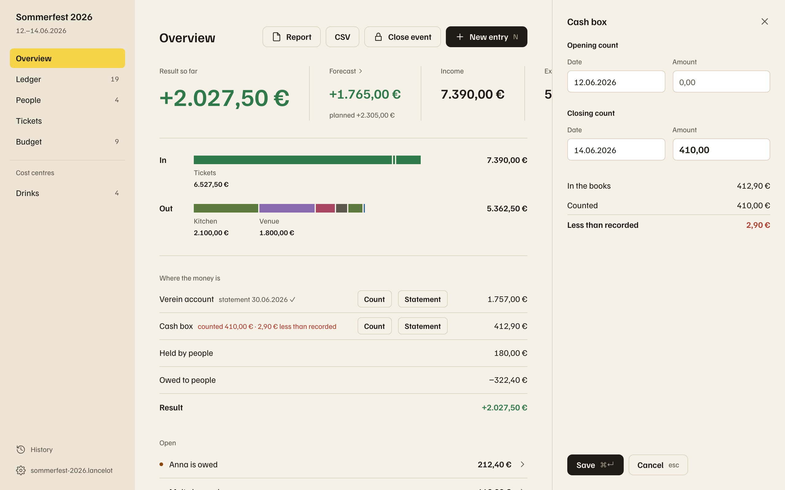
If it doesn't match, look for a missing entry first. A difference you can't explain can be accepted with a note when you close.
Check a bank statement
- Click Statement next to the account.
- Enter the date and what the statement shows. For a net movement account, enter how much the event's money changed the account, not its total balance.
- Click Add. A mismatch becomes an open item.

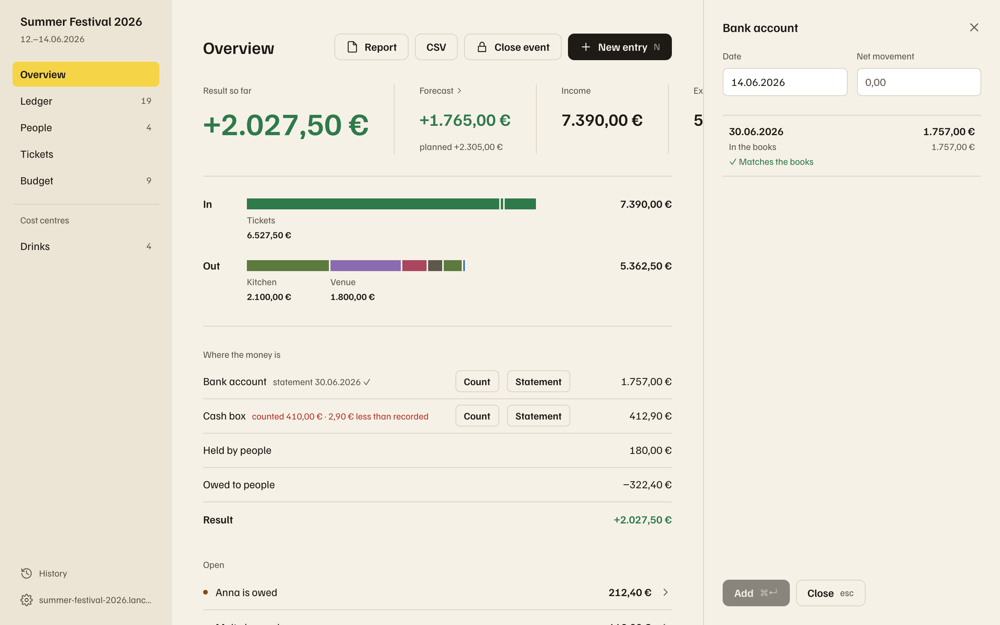
10. Pay people back

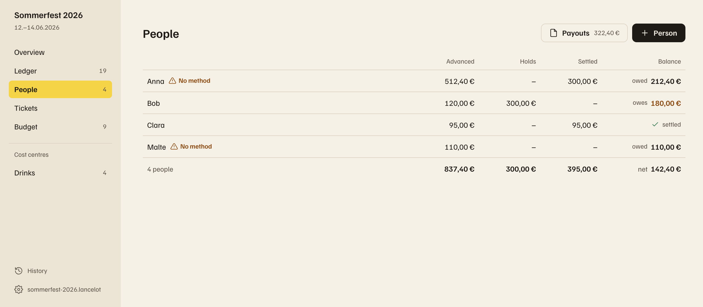
Click a person to see each line behind their balance, and go from there to its entry.

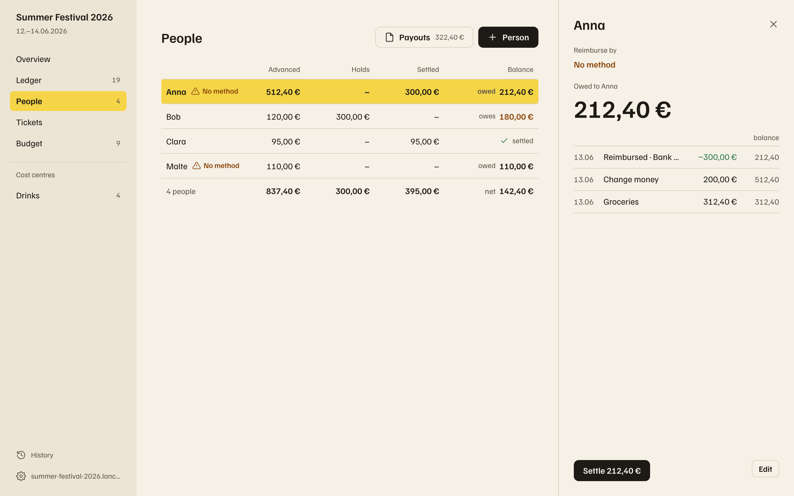
A settle records a payment that already happened. Make the transfer first, or hand over the list, and then record it. Changing a saved settle later corrects the record, not the transfer.
Pay everyone at once
- On People, click Payouts.
- Check the list. It has each person's reimbursement method and the amount, and for a bank transfer the account holder and a suggested reference.
- Click PDF or CSV to save it. Tick With advances and payments to add the details as an appendix to the PDF.
- Make the transfers, or give the list to whoever does.
- Once they're paid, click Mark as paid. Tick who you paid, choose the account and date, and confirm. Bank transfers start ticked, and other methods are yours to tick.
- If the money came from different accounts, such as the bank for some and the cash box for others, do it once per account, ticking only the people paid from that one.

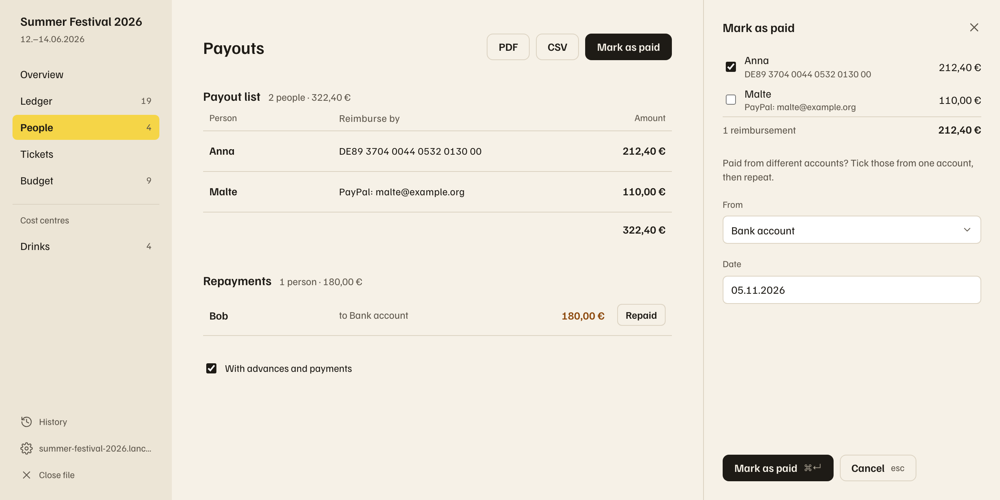
Pay one person, or a part
- Open the person on People and click Settle.
- Change the amount if it's a partial payment. The panel shows the balance it leaves, and warns you if it's too much.
- Check the account under From, and click Save.

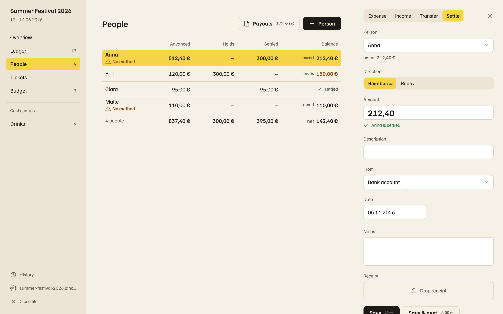
Collect from people who owe the event
Under Repayments on the Payouts page, click Repaid once the money has arrived. It opens a settle in the Repay direction.
11. Report and close
Clear the open items
The Open list on the Overview shows what's unfinished. Each item leads to its fix:
- A person who is owed money, or holds it.
- An expense with no receipt.
- A cash account with no closing count, or with a difference.
- A statement that doesn't match.
- A ticket conflict that isn't resolved.
Print the report
- On the Overview, click Report.
- Choose whether to include Stock and sales and Receipts in the toolbar.
- Click Print (⌘P), and choose to save as PDF in the print dialog.

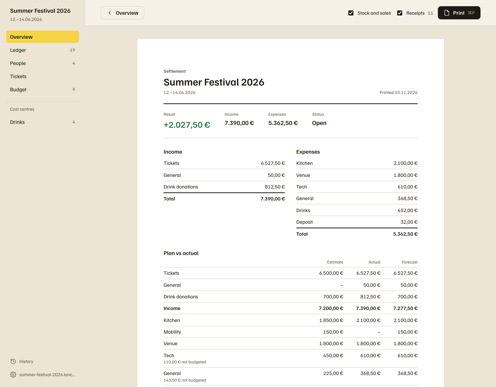
The CSV button on the Overview exports all transactions, one row per line, for use in a spreadsheet. It's also the easiest way to compare with one in your first parallel run.
Close the event
- Click Close event on the Overview.
- If anything is still open, write in Why it is fine for each item. The button stays disabled until each has a note.
- Click Close event (⌘↵).

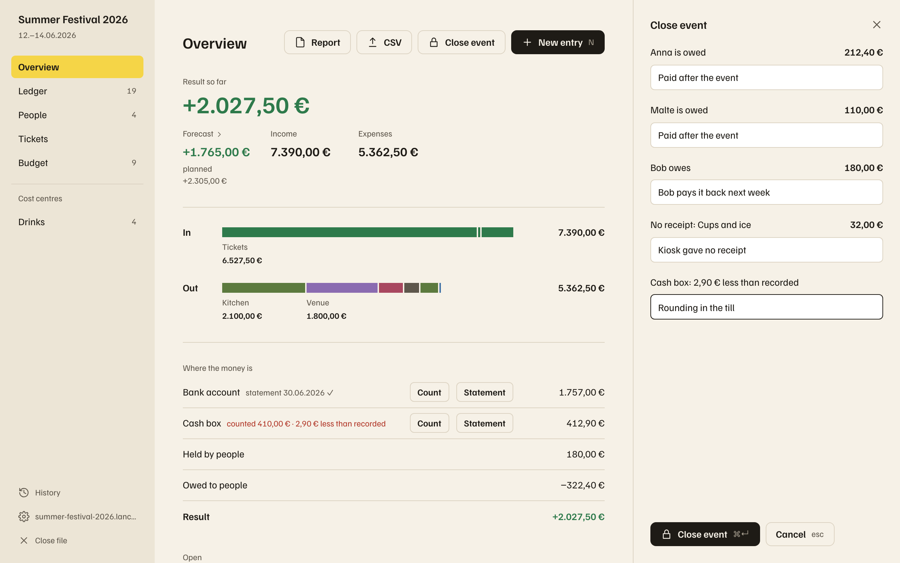
A closed event is read-only and shows its final balance for good. Receipts can still be previewed. What happens to the money afterwards, such as moving a surplus elsewhere, is outside Lancelot.

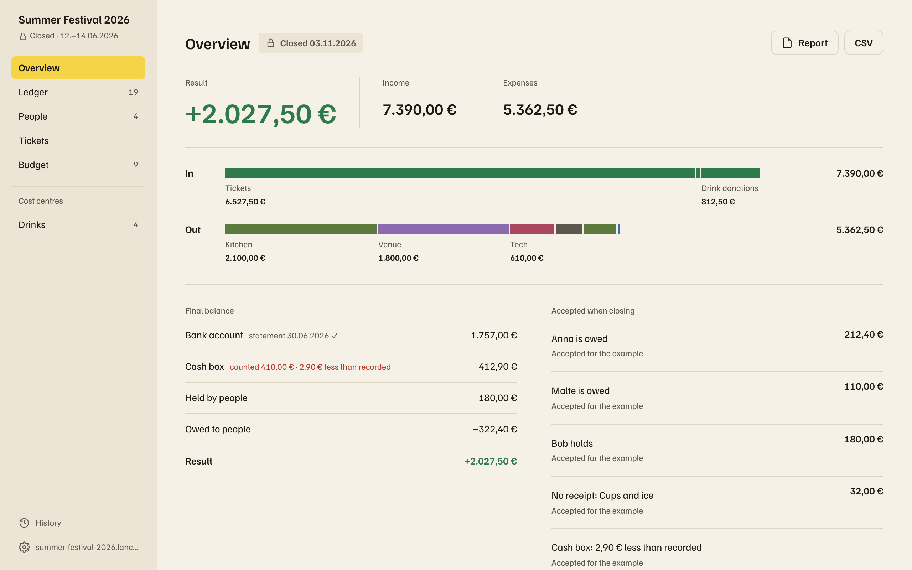
Found a mistake? Go to Settings → Status → Reopen. Your notes are kept for when you close it again, and both steps appear in History.
Reference
Your file and backups
- One file holds everything: entries, receipts, people and history. To see where it is, go to Settings → File → Show in Finder.
- It's an open format. A
.lancelotfile is a SQLite database, readable without Lancelot. - There's no Save command for the file. Each change is written as soon as you save it in a panel.
- Backups are automatic. Lancelot keeps the last 20 versions of each event. Change the number under Settings → Backups, and click Restore to go back to one.
- Integrity is checked on every open and save. Settings → File → Check again runs it on demand, and any problem shows in a banner.
- It holds personal data: IBANs, names and receipts. Treat the file as you would a folder of bank details. Order IDs are the only buyer data it takes from a ticket sheet.
Close the event (⌘W) before you copy, move or email its file, so that the copy is complete.
Data sources
The Ticket API and Stock and sales plugins can pull from a web service. This has worked in the desktop app against a test service, but not with a real provider. Check the results carefully, and don't depend on this for a real event yet.
- In Settings → Plugins, click Set up under the plugin.
- Enter a Name, the URL, the Auth header and the Token, which is the header's whole value, such as
Bearer abc123. - Under What the provider calls things, enter the field names your provider uses.
- Click Save and test, and check the sample rows it shows.
- Use Pull tickets on the Tickets page, or Pull logged on the cost centre page. You always review the changes first, and a failed pull changes nothing.

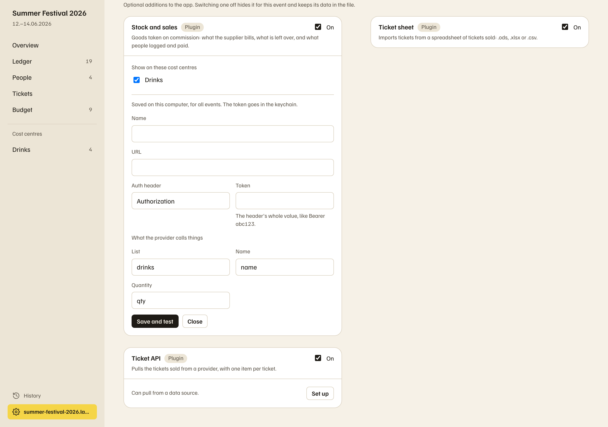
Pulling is the only thing in Lancelot that uses the network.
Typing amounts
Amount fields accept both number formats, whichever one you display, and always show what they read before you save.
| You type | It reads | Why |
|---|---|---|
12,5 or 12.5 | 12,50 € | A last separator with 1–2 digits after it is the decimal point. |
1.234,56 or 1,234.56 | 1.234,56 € | The other separators group thousands. |
1.234 or 1,234 | Depends | This is ambiguous, so it follows your number format. Check the hint. |
$12.50 | 12,50 € | Currency symbols and spaces are ignored. Amounts are always in the event's currency. |
1,29+1,49 | 2,78 € | Fields add up sums with + and -. Only the total is saved. |
1,2345 or 1.23.4 | Refused | Nothing is silently rounded or guessed. |
Choose how numbers and dates are displayed in Settings → Display. The choice applies to all your events.
Keyboard shortcuts
| Anywhere | |
|---|---|
| ⇧⌘N | New event |
| ⌘O | Open an event |
| ⌘W | Close the file |
| ⌘, | Settings |
| ⌘1–⌘9 | Pages and cost centres |
| Esc | Close the panel |
| Entering | |
|---|---|
| N | New entry, budget line or product |
| ↑ ↓ | Move through the ledger |
| ↵ | Open the selected entry |
| ⌘↵ | Save the panel |
| ⇧⌘↵ | Save and start the next entry |
| ⌘P | Print the report |
When something looks wrong
“Open in another window”
The file is already open elsewhere. Close it there first.
“Damaged” when opening a file
The integrity check found a problem. The panel lists the issues and the backups, and Restore goes back to one. Keep the damaged file until you've checked the restored one.
“Not found” in the recent list
The file was moved or deleted. Use Open to find it again, and the small × to remove the old line.
Save does nothing, or an amount is refused
Look for a field marked in red. For a split, check that the counter reads 0,00 € left.
I can't delete a person, account or tier
Something still refers to it. Only people, accounts and tiers that nothing uses can be deleted.
I can't switch off tickets
The event still has tiers. Delete them first, which requires that nothing uses them.
An entry can't be edited
It came from tickets or an opening count. The panel has a button to the place where it's changed. If everything is locked, the event is closed, and you can reopen it.
Mark as paid is disabled
Nobody on the list has a reimbursement method, or nobody is ticked. Add methods on the People page.
The forecast is lower than I expected
It's meant to be cautious. Mark finished lines as Complete so that they count with their actual amount.
Glossary
| Term | Meaning |
|---|---|
| Advance | A payment from someone's private money on the event's behalf. The event now owes them. |
| Alias | Another name for a tier in the ticket sheet. |
| Commission goods | Goods taken with the right to return what's unsold. You pay only for what you keep. |
| Conflict | A ticket that was in the last sheet and is gone from the new one, waiting for your decision. |
| Counterparty | The shop or supplier on an entry. Usually it's only information, but the Stock and sales invoice check finds a supplier's invoices by this name. |
| Final balance | Where the money is when the event closes. |
| Net movement | Tracking only how much the event changed an account, and not its total. |
| Open item | Something unfinished that blocks closing, until it's fixed or accepted with a note. |
| Result | Income minus expenses. |
| Settle | Recording that a person's balance was paid, as a reimbursement or a repayment. |
| Snapshot date | The date an import stands for. The latest one is the current sheet. |
| Tally | A tally mark on a paper list, worth a fixed amount. |
| Tier | A ticket type with a fixed price, such as Early Bird. |